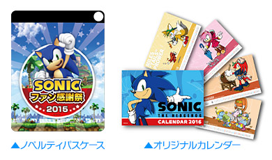
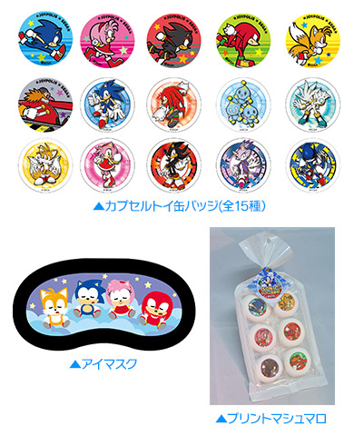
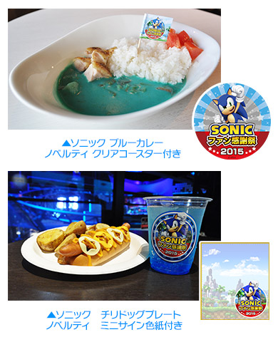
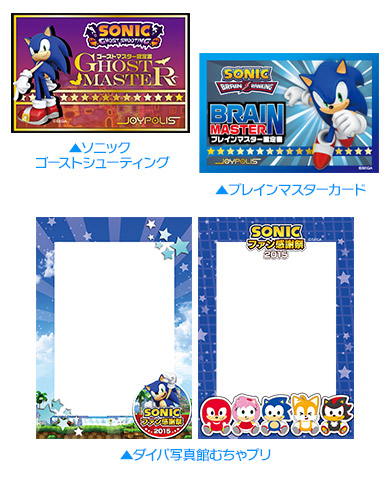
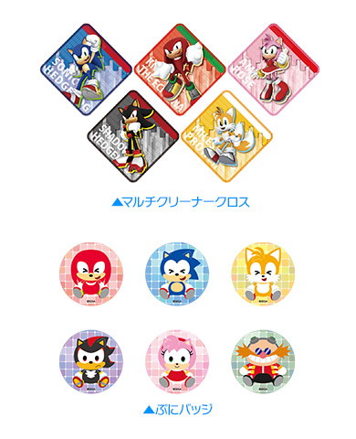

「ソニックファン感謝祭2015」当日限定のコラボメニューや記念グッズ、ノベルティ等の詳細情報が決定！
12月27日(日)東京ジョイポリスにて開催いたします「ソニックファン感謝祭2015」において、当日限定で登場するコラボメニュー、記念グッズ、ノベルティ等の詳細情報が決定！
「ソニックファン感謝祭2015」は、「ソニック」のファンの皆様へ感謝を込めて実施するイベントです。東京ジョイポリスメインステージにて行うスペシャルステージでは、「ソニック」シリーズサウンドディレクター瀬上純、大谷智哉によるライブや、豪華賞品が当たる大抽選会、ニンテンドー3DS専用ソフト『セガ3D復刻アーカイブス2』に収録の『ソニック・ザ・ヘッジホッグ』を使ったゲーム大会などを行います。そして今回は、「ソニックシリーズ コスプレコンテスト in ファン感謝祭2015」の決勝戦も開催。11月5日(木)から12月13日(日)まで実施されていた写真審査を通過した5名をステージ上で登壇者が審査し、優勝者を決定します。
なお、ステージ終了後には、飯塚プロデューサー、上川デザイナー、瀬上サウンドディレクター、大谷サウンドディレクターのサイン会も開催予定です。ソニックへの愛溢れるイベントに、どうぞご期待ください。
「ソニッファン感謝祭2015」追加情報
ノベルティ付きチケット

| 限定グッズ&メニュー | 価格(税込) |
|---|---|
| パスポート (入場+アトラクション乗り放題+パスケース+カレンダー) |
大人：4,500円 小中高生：3,500円 |
| アトラクション１回券 (入場+アトラクション１回券+パスケース+カレンダー) |
大人：3,000円 小中高生：2,500円 |
オリジナルグッズ
| 限定グッズ&メニュー | 価格(税込) |
|---|---|
| 缶バッジ(全15種) | 300円/1PLAY |
| アイマスク | 700円 |
| プリントマシュマロ | 400円 |

ノベルティ付きオリジナルフード

| 限定グッズ&メニュー | 価格(税込) |
|---|---|
| ソニック ブルーカレー ＠Frame cafe | 1,150円 |
| ソニック チーズチリドッグプレート ＠D-ラウンジ | 980円 |
アトラクション
| 限定グッズ&メニュー | 価格(税込) |
|---|---|
| ソニック ゴーストシューティング (高得点獲得でゴーストマスターカードをプレゼント) |
500円/1名 |
| ソニック ブレインランキング (高得点獲得でブレインマスターカードをプレゼント) |
500円/1名 |
| ダイバ写真館むちゃプリ (1グループに付きSサイズを1枚プレゼント) |
1枚500円～ |

オリジナルプライズ

| 限定グッズ&メニュー | 価格(税込) |
|---|---|
| マルチクリーナークロス | 200円/1PLAY |
| ぷにバッジ | 100円/1PLAY |
| クリスマスソニックSJ | 100円/1PLAY |
| イベント名称 | ソニックファン感謝祭 2015 |
|---|---|
| 会場 | 東京ジョイポリス（東京都港区台場1-6-1 デックス東京ビーチ3～5F） |
| 日時 | 2015年12月27日（日） |
| イベントスケジュール | 10：00 ステージ前観覧エリア整理券配布開始 【場所】1st Floor メインステージ ※整理券配布数：200枚 13：30 ステージ前観覧エリア開場 【場所】1st Floor メインステージ 14：00 開演 16：30 サイン会開演 【場所】3rd Floor メインステージ |
| 料金 | 「東京ジョイポリス」入場券が必要となります。 ・入場料（入場のみ）／大人(18歳以上)800円、小中高生300円 |
| 登壇者 | 飯塚 隆 プロデューサー 上川 祐司 デザイナー 瀬上 純 サウンドディレクター 大谷 智哉 サウンドディレクター |
| 特設サイト | http://tokyo-joypolis.com/event/sonic_fan2015/ |
《注意事項》
- イベント参加は無料ですが、別途「東京ジョイポリス」の入場料が必要です。
- ステージ前観覧エリアでの観覧は着席ではなくスタンディングとなります。
- 観覧エリア外からもステージを自由にご観覧いただく事が可能です。
- ステージ前観覧エリアへの入場は整理券が必要です。配布は先着順となり、無くなり次第配布終了となります。
- 撮影機器、録音機器の持ち込みは禁止とさせていただきます。また、携帯電話での撮影も禁止とさせていただきます。
- ショーの開催時間や内容等はやむを得ぬ事情により、予告なく変更となる場合がございます。
- 会場周辺の泊り込みや、荷物やシートでの場所とりなど他のお客さまのご迷惑となるような行為はかたくお断りいたします。
- 当日はスタッフの指示に従ってください。従っていただけない場合は観覧をお断りする場合がございます。
- イベント中の危険行為は厳禁とさせていただきます。
→東京ジョイポリス ソニック ファン感謝祭 2015 特設ページ